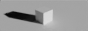
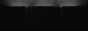
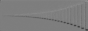
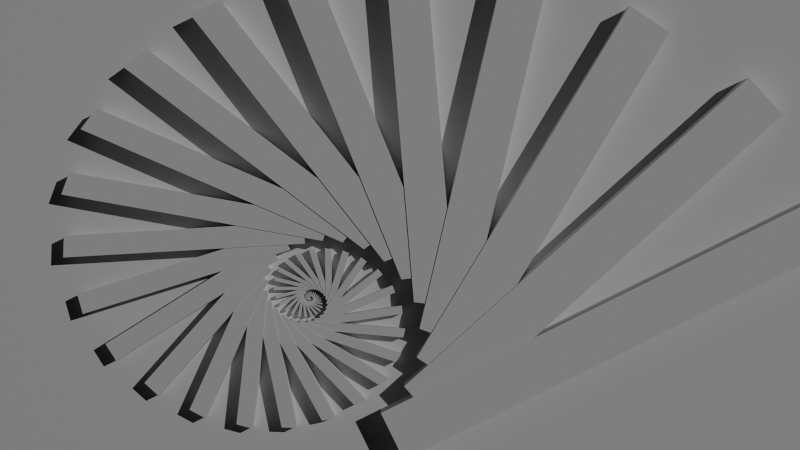
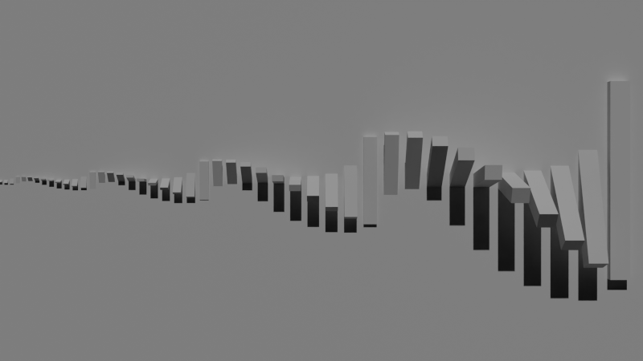
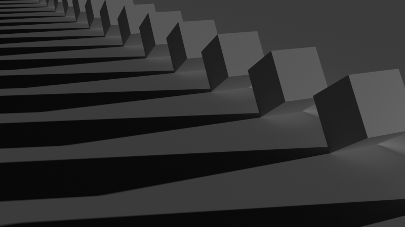
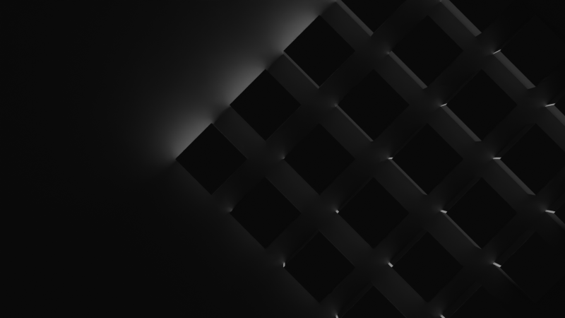

I normally make still renders, but today i felt like making buttons, so i made these as a challenge, i guess.

One with cubes walking;


Two having fun with shadows and things;
And two others with a spinning color ring.

Another one exploring shadows, but because of the speed and low resolution, it didn't turn out very good.
But at least I got some nice still renders.


2 based on the not-very-good stick gif;

One on the walking cubes one with nice, long and sharp shadows;

And another based on the cubes casting shadows on each other.
This was my first time doing buttons, so it's pretty basic, but i wanna do it again some other time.
Edit: i did!